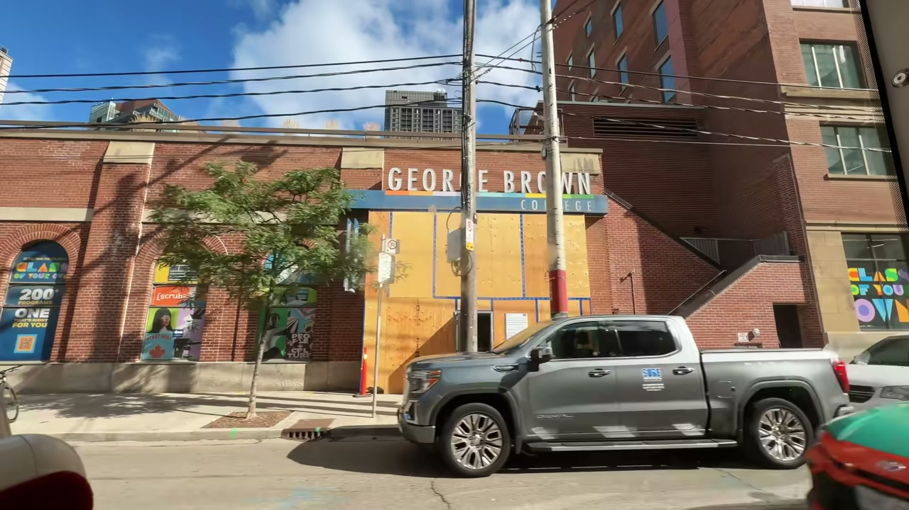
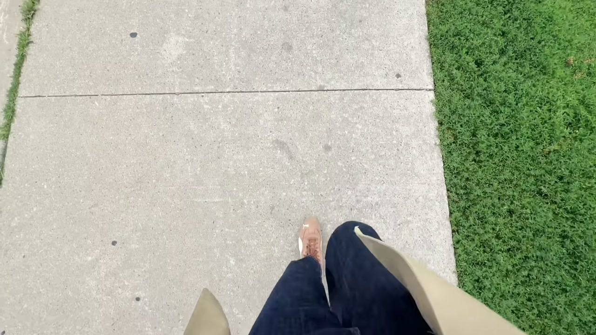
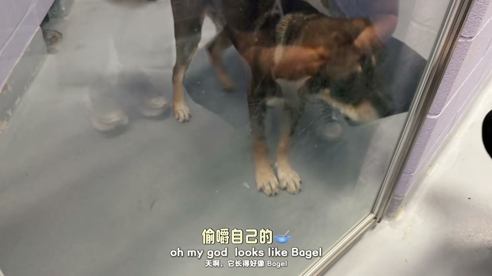
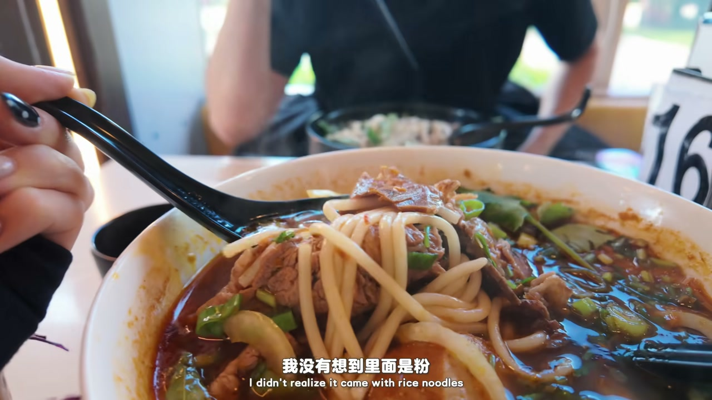
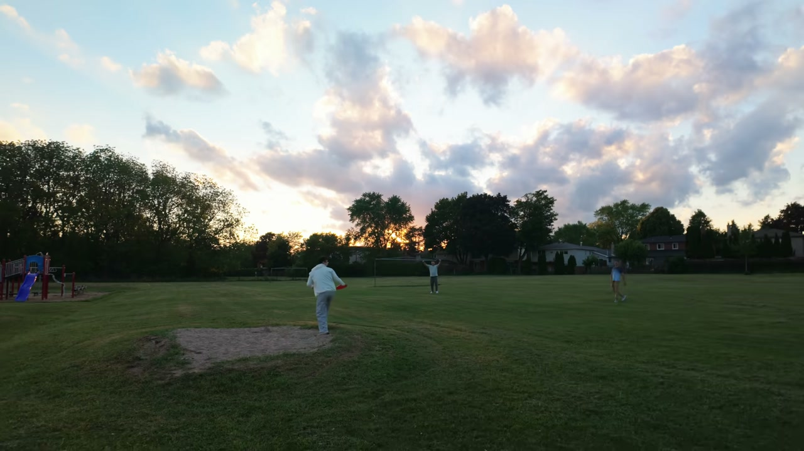
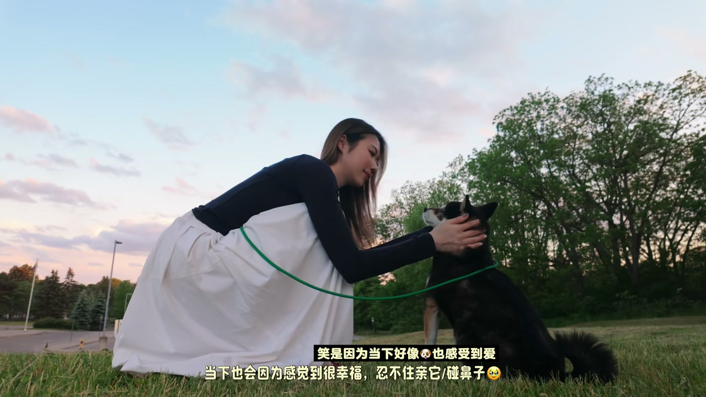

上午：咖啡厅远程办公 + 收容所义工
00:57今天公司举办小小的团建活动，早上没去 office，在活动附近咖啡厅小小工作了一下，早上的会议蛮多。
01:56开完会前往活动地点——Toronto Humane Society（在 Distillery 附近），直译类似动物救助站，也提供绝育等宠物服务。
03:05收容所里的猫猫们超可爱：“我的天啊那是啤酒，你为什么要把眼睛放在旁边”、“我喜欢你的耳朵”——撸猫名场面。

[01:00] 团建日：咖啡厅远程办公
Team day: remote working at a café

[02:30] 前往 Toronto Humane Society
Heading to the Toronto Humane Society

[03:05] 收容所猫猫：可爱名场面
Shelter cat: an adorable classic scene
周六：128 越南粉 + 办公咖啡厅
04:14今天是周六，记录周末行程：早上起了个大早出门办事，正好在 Van 附近——之前保养车时来试过这家越南粉，很好吃。
04:36128 越南粉：肉看起来超好吃、肉挺好吃；“我以为点的是面，没想到里面是粉”——真的是米粉/米线口感，不是外面那种塑料口感，越吃越好吃，两人换着吃。
05:54刚吃完饭来咖啡厅：这家非常特别，左边是开发商，跟开发商合在一起，小角落环境给附近的人喝咖啡办公——很贴心，电脑脚架都是这边提供的，有这种设施就更愿意来工作。
[04:30] 128 越南粉：北边宝藏店
128 Vietnamese noodles: a hidden gem in the north

[05:10] 真米粉口感，肉超级好吃
True rice-noodle texture, and the meat is superb
咖啡厅 + 傍晚遛狗
06:43现在已经 8 点 20 了，但天气还是很好、还没有天黑，所以出来走走遛遛狗。
07:12这个云超好看，这边的夕阳更好看——金色晚霞。
07:43男友突然看到三个陌生人在玩飞盘，问 “Can I join?” 就跑去玩了，剩下我和小狗继续走。
[06:00] 开发商+咖啡厅合体空间
A combined developer + café space

[07:40] 8 点 20 天的金色夕阳
A golden sunset at 8 pm, 20 days
和小狗看日落
08:50如果你是猫的话，你的声音应该是很恐怖——和小狗的幼稚对话；“看镜头，你在干嘛，宝贝”。
09:24那场傲娇的拆卷：怎么十岁了还这么有想法——十岁老狗又傲娇又有想法，“宝贝回家吧”，回家清清的喝水。

[08:50] 和小狗散步，傲娇十岁老狗
Walking the dog — a proud, grumpy ten-year-old
不上班的多伦多一天：咖啡厅办公、收容所撸猫、宝藏越南粉、办公咖啡厅，最后和小狗看 8 点 20 的金色夕阳——work-life balance 的模板 Vlog。